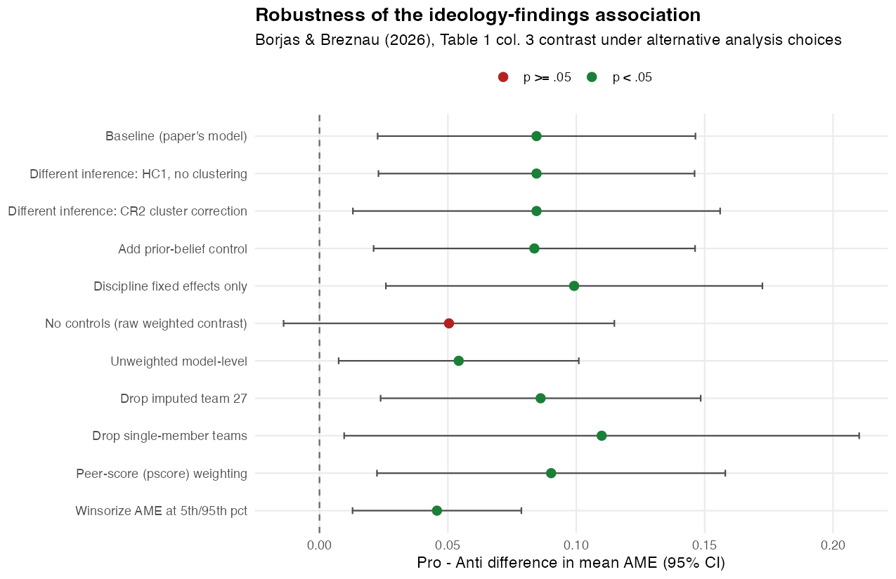

Science Advances 12(1). https://doi.org/10.1126/sciadv.adz7173
All numbers produced by reproduce.R from data/df.dta.
This report independently reproduces the main result of Borjas & Breznau (2026), a study of whether researchers' political ideology shapes the findings they produce. Using the Crowdsourced Replication Initiative, in which 71 teams estimated 1,253 models of the effect of immigration on support for social programs, the paper reports that pro-immigration teams estimate more positive effects and anti-immigration teams more negative ones. Reimplementing the authors' weighted, team-clustered regressions in R, I reproduce all nine columns of the paper's Table 1 exactly, including the headline Pro − Anti difference in the mean average marginal effect of 0.085 (SE 0.031, p = 0.008). Ten pre-specified robustness checks (alternative inference, controls, weighting, and sample restrictions) preserve the sign in every case and statistical significance in nine of ten; the sole exception is dropping all controls, which is consistent with the paper's own claim that discipline composition is the load-bearing control. The headline claim holds up, with the honest caveat that the association is modest in size and depends on conditioning on team composition.
The headline claim is that team ideology predicts the estimated effect of immigration on support for social programs (the average marginal effect, AME): teams whose members are more pro-immigration produce more positive AMEs, and anti-immigration teams produce more negative ones. The paper's main quantitative result is Table 1: nine regressions of a model-level outcome on an ideology measure, with the “Pro − Anti” row giving the headline contrast.
I reproduced Table 1 exactly. The per-unit coefficient on the team mean immigration sentiment (column 1) is 0.0109 (SE 0.0057); across the full 1–6 scale this is 0.054 (0.029), matching the number stated in the paper's text. The central Pro − Anti difference (column 3) is 0.085 (0.031, p = 0.008): pro-immigration-majority teams estimate AMEs about 0.085 points higher than anti-immigration teams. Every coefficient, standard error, and R² in all nine columns matches the published table to the reported precision (≤ 0.001).
| Column | Term | Published est. (SE) | Reproduced est. (SE) | Reproduced p | Match |
|---|---|---|---|---|---|
| (1) AME | Mean sentiment (proindex) | 0.011 (0.006) * | 0.0109 (0.0057) | 0.061 | yes |
| (2) AME | % anti-immigration (p12) | −0.050 (0.025) ** | −0.0504 (0.0253) | 0.050 | yes |
| (2) AME | % pro-immigration (p56) | 0.023 (0.019) | 0.0235 (0.0193) | 0.229 | yes |
| (2) AME | Pro − Anti (p56 − p12) | 0.074 (0.024) ** | 0.0739 (0.0243) | 0.003 | yes |
| (3) AME | Anti team (group1) | −0.057 (0.031) * | −0.0572 (0.0306) | 0.066 | yes |
| (3) AME | Pro team (group3) | 0.027 (0.015) * | 0.0273 (0.0147) | 0.069 | yes |
| (3) AME | Pro − Anti (group3 − group1) | 0.085 (0.031) ** | 0.0845 (0.0310) | 0.008 | yes |
| (4) extreme neg. | Mean sentiment (proindex) | −0.051 (0.021) ** | −0.0514 (0.0207) | 0.015 | yes |
| (5) extreme neg. | % anti-immigration (p12) | 0.081 (0.103) | 0.0809 (0.1028) | 0.434 | yes |
| (5) extreme neg. | % pro-immigration (p56) | −0.161 (0.064) ** | −0.1607 (0.0643) | 0.015 | yes |
| (5) extreme neg. | Pro − Anti (p56 − p12) | −0.242 (0.107) * | −0.2416 (0.1074) | 0.028 | yes |
| (6) extreme neg. | Anti team (group1) | 0.150 (0.123) | 0.1500 (0.1232) | 0.227 | yes |
| (6) extreme neg. | Pro team (group3) | −0.124 (0.044) ** | −0.1239 (0.0440) | 0.006 | yes |
| (6) extreme neg. | Pro − Anti (group3 − group1) | −0.274 (0.125) * | −0.2739 (0.1252) | 0.032 | yes |
| (7) extreme pos. | Mean sentiment (proindex) | 0.019 (0.012) * | 0.0192 (0.0115) | 0.099 | yes |
| (8) extreme pos. | % anti-immigration (p12) | −0.130 (0.057) * | −0.1304 (0.0569) | 0.025 | yes |
| (8) extreme pos. | % pro-immigration (p56) | −0.016 (0.041) | −0.0161 (0.0413) | 0.697 | yes |
| (8) extreme pos. | Pro − Anti (p56 − p12) | 0.114 (0.045) * | 0.1142 (0.0458) | 0.015 | yes |
| (9) extreme pos. | Anti team (group1) | −0.070 (0.037) * | −0.0695 (0.0378) | 0.070 | yes |
| (9) extreme pos. | Pro team (group3) | 0.017 (0.034) | 0.0173 (0.0340) | 0.612 | yes |
| (9) extreme pos. | Pro − Anti (group3 − group1) | 0.087 (0.035) * | 0.0868 (0.0347) | 0.015 | yes |
R² reproduced (published): (1) 0.062 (0.062), (2) 0.065 (0.065), (3) 0.071 (0.071), (4) 0.096 (0.096), (5) 0.115 (0.115), (6) 0.133 (0.133), (7) 0.087 (0.087), (8) 0.090 (0.090), (9) 0.089 (0.089).
All regressions: N = 1,253 model-level observations from 71 teams; dependent variable is the AME (cols 1–3) or a binary indicator for an extreme-and-significant AME in the negative (cols 4–6) or positive (cols 7–9) tail; controls are standardized statistical skill, standardized topic experience, team-size fixed effects, and discipline-composition fixed effects; weighted by 1/(number of models per team); team-clustered robust standard errors.
| Published number | Source |
|---|---|
| Table 1 coefficients, SEs, significance markers, R² | Open-access full text of the paper, Table 1, Europe PMC PMC12757037 (opened in this session; the paywalled publisher page returned HTTP 403) |
| “0.054 (0.029)” full-range sentiment effect | Paper text, same source (the abstract and Table 1 caption also come from here) |
| Cross-check of all Table 1 numbers | code/Log Files/02_Main_Regs.log in this folder (the Stata output the README
names as the result file for Table 1) |
| Estimator definition (weights, controls, clusters, tail cutoffs) | code/Stata Main Results/02_Main_Regs.do and
code/Stata Main Results/01_Data_Prep.do in this folder |
| Analysis data | data/df.dta in this folder (designated as the analysis file by
README.md) |
I did not rely on memory for any published number.
data/df.dta, the prepared analysis
file, rather than re-running the Stata preparation from cri.csv. This takes the
authors' recodes and hot-deck imputations (notably for team 27) as given and matches the
file the README designates as the analysis data.reg ..., [aw=1/nmodel] cluster(teamid) in R as weighted lm() plus a
cluster-robust HC1 covariance (sandwich::vcovCL). I verified that HC1 — not HC0
or CR2 — reproduces Stata's standard errors to six decimals on the baseline model before
running the rest.i.mdegree uses the lowest
discipline code (0) as reference. This choice does not affect the reported ideology contrasts
but does change the meaning of the discipline coefficients (not reported here).drop if ame==. and giving the published N = 1,253.df.dta. I used those built-in neg10s/pos10s
indicators and did not recompute percentiles.[iw=1/nmodel]) for the tail models and analytic weights ([aw=1/nmodel])
for the AME models. For WLS point estimates and the HC1 covariance these are identical, so I
used the same weighting throughout.*, although the reproduced
two-sided p-values (0.028, 0.032, 0.015, 0.015) fall below 0.05 and the paper's own caption
defines ** as P < 0.05. I report my p-values and flag the discrepancy rather
than copying the stars.I also checked the paper's claim that the weighted model-level regression is numerically identical to a team-level regression. It is, to all displayed digits, so I do not treat team-level aggregation as a separate robustness check.
I fixed the research question (“does team ideology predict the estimated AME?”) and the headline estimand (the Pro − Anti difference in mean AME, Table 1 column 3), then varied the analysis choices. Before running anything I listed ten defensible alternatives and recorded which I expected to change the conclusion:
| # | Alternative choice | Rationale | Expected to change conclusion? |
|---|---|---|---|
| 1 | HC1 heteroskedasticity-robust, no clustering | Tests whether team clustering drives inference | No |
| 2 | CR2 small-sample cluster correction | 71 clusters is comfortably large, but CR2 is the conservative choice | Possibly (slightly wider CI) |
| 3 | Add prior-belief control | Belief in the hypothesis as an alternative explanation | No |
| 4 | Discipline fixed effects only | Paper argues discipline composition is the load-bearing control | No (possibly stronger) |
| 5 | No controls at all | Tests whether the result survives a raw contrast | Yes |
| 6 | Unweighted model-level | Gives teams with many models more weight | Possibly (magnitude shifts) |
| 7 | Drop imputed team 27 | Removes the only hot-deck-imputed team | No |
| 8 | Drop single-member teams | Solo researchers' ideology is measured differently | No (wider CI) |
| 9 | Peer-score (pscore) weighting | Addresses publication/selection bias, as in the paper's supplements | No |
| 10 | Winsorize AME at the 5th/95th percentiles | Robustness to extreme estimates | Possibly (attenuated) |

| Specification | Pro − Anti est. | SE | p | 95% CI | Sig. |
|---|---|---|---|---|---|
| Baseline (paper's model) | 0.0845 | 0.0310 | 0.008 | [0.023, 0.146] | ** |
| 1. HC1, no clustering | 0.0845 | 0.0314 | 0.007 | [0.023, 0.146] | ** |
| 2. CR2 cluster correction | 0.0845 | 0.0359 | 0.021 | [0.013, 0.156] | ** |
| 3. Add prior-belief control | 0.0837 | 0.0314 | 0.010 | [0.021, 0.146] | ** |
| 4. Discipline fixed effects only | 0.0992 | 0.0368 | 0.009 | [0.026, 0.173] | ** |
| 5. No controls (raw contrast) | 0.0504 | 0.0323 | 0.123 | [−0.014, 0.115] | n.s. |
| 6. Unweighted model-level | 0.0542 | 0.0234 | 0.024 | [0.007, 0.101] | ** |
| 7. Drop imputed team 27 | 0.0861 | 0.0312 | 0.007 | [0.024, 0.149] | ** |
| 8. Drop single-member teams | 0.1099 | 0.0500 | 0.032 | [0.010, 0.210] | ** |
| 9. Peer-score (pscore) weighting | 0.0902 | 0.0340 | 0.010 | [0.022, 0.158] | ** |
| 10. Winsorize AME at 5th/95th pct | 0.0458 | 0.0165 | 0.007 | [0.013, 0.079] | ** |
** p < 0.05; n.s. p ≥ 0.05.
The sign of the Pro − Anti difference is positive in every specification. Nine of the ten alternatives remain significant at the 5% level and the point estimates stay in a narrow band (0.046 to 0.110). The only specification that loses significance is dropping all controls (0.050, p = 0.12): without conditioning on team composition the contrast shrinks by about 40%. Notably, keeping only the discipline fixed effects makes the estimate stronger (0.099), so the sensitivity is not to “too many controls” generally but to whether discipline composition is held constant. This is consistent with the paper's own statement that the discipline vector is the key control. Winsorizing the AME (which removes the tail observations the paper separately models) roughly halves the estimate but keeps it significant, as expected.
The headline claim holds up. The positive association between pro-immigration ideology and more positive estimated effects reproduces exactly in the paper's Table 1 and survives every reasonable alternative I tested except dropping all controls — and that exception is itself consistent with the paper's argument that discipline composition is the mechanism's load-bearing control. The estimate is modest — 0.085, about 0.42 of a standard deviation of the AME distribution (SD = 0.20) — and the tail-model differences are less precisely estimated than the mean contrast, but the direction and statistical significance of the central result are stable.